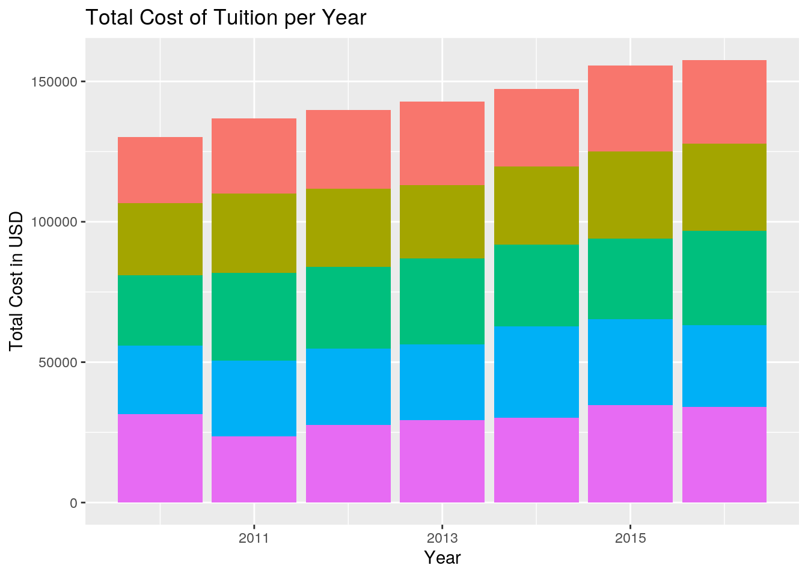

This is an R Markdown document. Markdown is a simple formatting syntax for authoring HTML, PDF, and MS Word documents. For more details on using R Markdown see http://rmarkdown.rstudio.com.
When you click the Knit button a document will be generated that includes both content as well as the output of any embedded R code chunks within the document. You can embed an R code chunk like this:
I have chosen two datasets from R packages accessed through tidytuesday via GitHub regarding college tuition, diversity, and pay (tuition income) and US spending on kids (kids). My aim was to analyze wether or not the yearly amount of public spending on kids and public spending per child, both adjusted for inflation, is inversely related to the yearly total cost of college attendance and the net cost paid by students after scholarships and awards. Before condensing the datasets, the kids dataset contained 3 categorical and 3 numerical variables. The kids dataset contains an account of public spending on children from 1997 through 2016 to analyze state-testate spending on education, income security health, etc. The college tuition data originally came from the US Department of Education from 2010 to 2016. The tuition income dataset contained 5 categorical and 2 numerical variables. These datasets in particular are interesting to me because I’ve always been hyperaware both of how expensive tuition is for college students such as myself and how little funding public schools received and was wondering if both, since they receive public/government funding, are correlated. I am anticipating that as the yearly amount of public spending on kids increases, the cost of tuition will decrease because the government will funnel more money into college education.
library(dplyr)
library(tidyverse)
library(tidyr)
library(corrplot)
library(cluster)
tuition_income <- readr::read_csv("https://raw.githubusercontent.com/rfordatascience/tidytuesday/master/data/2020/2020-03-10/tuition_income.csv")
kids <- readr::read_csv("https://raw.githubusercontent.com/rfordatascience/tidytuesday/master/data/2020/2020-09-15/kids.csv")
drop <- c("state", "variable", "raw")
kids1 = kids[, !(names(kids) %in% drop)]
drop1 <- c("name", "state", "campus")
tuition1 = tuition_income[, !(names(tuition_income) %in% drop1)]
kids2 <- kids1 %>% filter(year %in% (2010:2016))
tuition2 <- tuition1 %>% filter(year %in% (2010:2016))
set.seed(1000)
cost <- full_join(kids2 %>% sample_frac(0.12184), tuition2 %>%
sample_frac(0.006462), by = "year")
view(cost)First, from the kids dataset I dropped the cases “state”, “variable, and “raw” and the variables “name”, “state”, and “campus” to minimize the combined data set to 6 variables in total: 2 categorical and 4 numerical. I then proceeded to filter both datasets to condense the data to between the years of 2010 and 2016 since that is all that was reported on by the tuition income dataset. Before combining the datasets, since my dataset was very large and thus unable to work with, I set the seed and used sample frac to get a random sample of 1000 rows before performing a full join on my two datasets by the common categorical variable year to return all of the data into a singular dataset named cost.
summary(cost)## year inf_adj inf_adj_perchild total_price
## Min. :2010 Min. : 0 Min. : 0.0000 Min. : 9020
## 1st Qu.:2012 1st Qu.: 103820 1st Qu.: 0.1766 1st Qu.:18540
## Median :2013 Median : 381908 Median : 0.3932 Median :25734
## Mean :2013 Mean : 1587007 Mean : 1.1329 Mean :29291
## 3rd Qu.:2015 3rd Qu.: 1363404 3rd Qu.: 1.0046 3rd Qu.:38200
## Max. :2016 Max. :52321616 Max. :17.0968 Max. :69912
## net_cost income_lvl
## Min. :-5276 Length:144121
## 1st Qu.: 9819 Class :character
## Median :15596 Mode :character
## Mean :16464
## 3rd Qu.:21644
## Max. :48115cost2 <- cost %>% group_by(year) %>% dplyr::summarize(inf_adj,
inf_adj_perchild, total_price, net_cost, income_lvl, meaninf = mean(inf_adj),
meanper = mean(inf_adj_perchild), meantotal = mean(total_price),
meannet = mean(net_cost))
cost2 %>% arrange(desc(inf_adj)) %>% filter(year == "2016") %>%
dplyr::summarize(meantotal = mean(total_price), meannet = mean(net_cost))## # A tibble: 1 x 3
## year meantotal meannet
## <dbl> <dbl> <dbl>
## 1 2016 31547. 17003.cost %>% filter(year == "2014") %>% dplyr::summarize(meantotal = mean(total_price),
meannet = mean(net_cost))## # A tibble: 1 x 2
## meantotal meannet
## <dbl> <dbl>
## 1 29457. 16711.In order to explore and manipulate my dataset, I used six different dplyr functions and ran various summary statistics. I began by first grouping my dataset by year and proceeded by summarizing the mean values for government spending adjusted for inflation, the adjusted inflation value per child, the total cost of tuition, and the net cost of tuition. While it looked like there was a general increase in the variables mean inflation, mean total, and mean total, the data was still too scattered to conclude a solid correlation between the variables. To continue in testing this relationship, I narrowed in on the year where the mean inflation was the highest, 2016, and the lowest, 2014, and compared both years against the mean total and mean net values. I found that for the year with higher inflation, 2016, the mean total and mean net was also higher (mean total of 31,547 and mean net of 17,003) compared to 2014.
cost %>% dplyr::select(inf_adj, inf_adj_perchild, total_price,
net_cost) %>% cor()## inf_adj inf_adj_perchild total_price net_cost
## inf_adj 1.0000000000 0.565678753 0.001889271 -0.0007207425
## inf_adj_perchild 0.5656787532 1.000000000 -0.004152471 -0.0023660493
## total_price 0.0018892708 -0.004152471 1.000000000 0.7219309611
## net_cost -0.0007207425 -0.002366049 0.721930961 1.0000000000cost %>% group_by(year) %>% dplyr::select(inf_adj, inf_adj_perchild,
total_price, net_cost) %>% summarize_all(sd)## # A tibble: 7 x 5
## year inf_adj inf_adj_perchild total_price net_cost
## <dbl> <dbl> <dbl> <dbl> <dbl>
## 1 2010 2772860. 1.59 9943. 7684.
## 2 2011 3090570. 1.81 11788. 7250.
## 3 2012 4646802. 1.92 12162. 8127.
## 4 2013 3433640. 2.43 12398. 7951.
## 5 2014 2269460. 1.54 13704. 8546.
## 6 2015 4812507. 2.18 14090. 8837.
## 7 2016 4406274. 1.66 14808. 8892.cost2 <- cost %>% dplyr::mutate(meaninf = mean(inf_adj), meanper = mean(inf_adj_perchild),
meantotal = mean(total_price), meannet = mean(net_cost),
difference = total_price - net_cost)I then proceeded by performing a correlation test between the inflated value, the inflated value per child, the total price, and net cost. I found that the variables that came from either dataset, tuition or kids, before they were combined had a slight correlatation but when compared against each other, the variables with the value for the adjusted inflation and the total price had a a very weak correlation of 0.001889 and -0.004152 for the total price compared against the adjusted inflation value per child. I then grouped the values from both datasets by year and created summary statistics by grouping the numerical variables by the categorical variable year. Then, I mutated my orinal dataset cost to add a new column difference to see if it is increasing with every year which would support my initial hypothesis that the government is increasing financial aid towards educational programs (towards scholarships) with every increasing year along with public spending.
You can also embed plots, for example:
Creating a correlation heatmap of my numeric variables, there was a slight correlation of 0.11 and 0.03 of both the total price and the net cost of tuition variables from the tuition dataset against the year. However, I am able to conclude that there is no correlation between the variables between two datasets tuition income and kids as most of the values were 0 or negatively correlated.
ggplot(cost, aes(year)) + geom_bar(aes(y = total_price, fill = income_lvl),
stat = "summary") + theme(legend.position = "none") + ggtitle("Total Cost of Tuition per Year") +
ylab("Total Cost in USD") + xlab("Year")
ggplot(data = cost, aes(x = year, y = inf_adj)) + geom_point(size = 0.1,
aes(color = income_lvl)) + ggtitle("Public Spending per Year") +
ylab("Public Spending on Kids") + xlab("Year")p = cost %>% dplyr::select_if(is.numeric) %>% scale
rownames(p) <- cost$year
money <- princomp(p)
summary(money, loadings = T)## Importance of components:
## Comp.1 Comp.2 Comp.3 Comp.4 Comp.5
## Standard deviation 1.3175058 1.2513151 0.9957913 0.6577230 0.52359759
## Proportion of Variance 0.3471667 0.3131601 0.1983214 0.0865205 0.05483127
## Cumulative Proportion 0.3471667 0.6603268 0.8586482 0.9451687 1.00000000
##
## Loadings:
## Comp.1 Comp.2 Comp.3 Comp.4 Comp.5
## year 0.136 0.986
## inf_adj -0.706 -0.706
## inf_adj_perchild -0.707 0.706
## total_price 0.704 -0.709
## net_cost 0.697 -0.148 0.702eigval <- money$sdev^2
round(cumsum(eigval)/sum(eigval), 2)## Comp.1 Comp.2 Comp.3 Comp.4 Comp.5
## 0.35 0.66 0.86 0.95 1.00eigval## Comp.1 Comp.2 Comp.3 Comp.4 Comp.5
## 1.7358216 1.5657895 0.9916003 0.4325995 0.2741544eigen(cor(p))## eigen() decomposition
## $values
## [1] 1.7358336 1.5658004 0.9916071 0.4326025 0.2741563
##
## $vectors
## [,1] [,2] [,3] [,4] [,5]
## [1,] -0.13619044 0.01632135 0.98629004 -0.054777407 -0.0736014409
## [2,] 0.01339891 -0.70648977 0.05270766 0.705630550 -0.0003157628
## [3,] 0.02216899 -0.70699519 -0.02455532 -0.706443340 -0.0010849571
## [4,] -0.70377472 -0.01928860 -0.04409744 -0.002337350 0.7087870202
## [5,] -0.69676560 -0.01978793 -0.14800782 0.004160177 -0.7015714583ggplot() + geom_point(aes(money$scores[, 1], money$scores[, 2])) +
xlab("PC1") + ylab("PC2") I created a bargraph to compare the total cost of tuition per year in USD and found that there was a gradual increase in the tuition cost per year and that the income levels also were slightly correlated to tuition costs. I proceeded by creating a pointgraph to compare the public spending on kids per year. The public spending looks like it remained more or less consistent and so I found that the results were not adequate enough to conclude a correlation between public spending on kids and year. Furthermore, I found that since the points were overlapping and incomprehensible, the income level is not really a factor in public spending towards kids. By running PCA on my numeric variables I was able to conclude that there is no correlation between my variables since the points are so oddly clustered and structured and since most values were negative. Note that the echo = FALSE parameter was added to the code chunk to prevent printing of the R code that generated the plot.